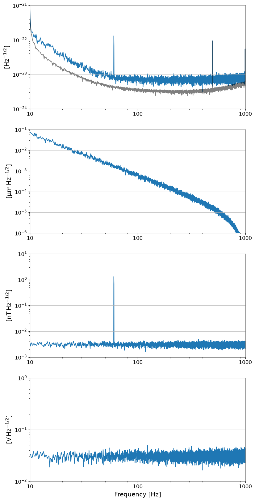
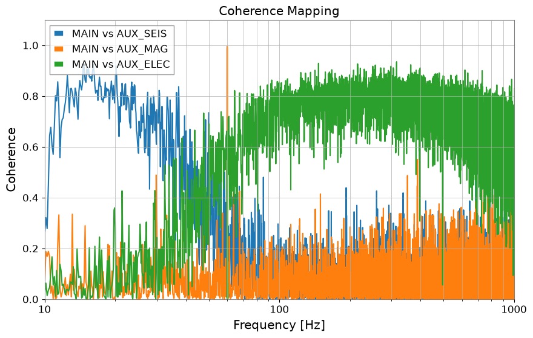
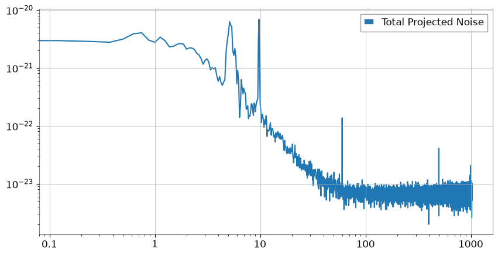

Note
このページは Jupyter Notebook から生成されました。 ノートブックをダウンロード (.ipynb)
[ ]:
# Install gwexpy with pinned versions of core dependencies for reproducibility on Colab
%pip install -q "gwexpy[all]" "gwpy<5.0.0" "numpy<2.0.0" "scipy<1.13.0" "astropy<7.0.0"
ケース導線:
正本ギャラリーに戻る: ケーススタディ一覧
関連リファレンス: リファレンス総合入口, API: 周波数系列, トピック別参照
前後の注目ワークフロー: 伝達関数推定, アクティブダンピング
ノイズバジェッティングと多チャンネル相関解析

精密計測（重力波検出器など）において、メインの観測データに含まれる雑音が「何に由来するのか」を特定することは極めて重要です。このプロセスを Noise Budgeting（ノイズバジェッティング） と呼びます。
重力波検出器の感度曲線は、低周波では地面振動、中周波では熱雑音、高周波では統計的なノイズ（ショットノイズ）によって制限され、特徴的な「下に凸」の形状を示します。
このチュートリアルでは、以下の流れで解析を実演します。
多チャンネルデータのシミュレーション: メインチャンネルに加え、地面振動、磁場変動、回路ノイズなどの補助チャンネルを生成します。
相関解析 (Coherence Mapping): メインチャンネルと各補助チャンネルのコヒーレンスを計算し、主なノイズ源を特定します。
結合関数の推定 (Transfer Function): 補助チャンネルからメインへの「漏れ込み量（伝達関数）」を推定します。
ノイズ投影 (Noise Projection): 伝達関数を用いて、補助チャンネルのノイズをメインチャンネルの単位に変換（投影）します。
ノイズ予算の可視化 (Noise Budget Plot): すべてのノイズ源を重ね合わせ、観測された「U字型」スペクトルの内訳を明らかにします。
[1]:
import warnings
warnings.filterwarnings("ignore", category=UserWarning)
warnings.filterwarnings("ignore", category=DeprecationWarning)
import matplotlib.pyplot as plt
import numpy as np
from scipy import signal
from gwexpy import TimeSeries, TimeSeriesDict
from gwexpy.noise.asd import from_pygwinc
from gwexpy.noise.wave import from_asd
1. 多チャンネルデータのシミュレーション (U字型スペクトルの作成)
重力波検出器を模した感度曲線を作成します。
MAIN: 観測対象。低域で地面振動、高域でアクチュエータ/回路系のノイズが支配的な「下に凸」のスペクトルを持ちます。AUX_SEIS: 低周波の地面振動をモニター。AUX_MAG: 磁場モニター（60Hzの電源ラインを含む）。AUX_ELEC: 高周波側のノイズ源（例：制御システムや読み出し回路のノイズ）。
[2]:
fs = 2048.0
duration = 64.0
t = np.arange(0, duration, 1 / fs)
n_samples = len(t)
np.random.seed(42)
rng = np.random.default_rng(42)
# aLIGO に似た ASD を基準にして、検出器感度らしい主チャンネルの土台を作ります。
fmax = fs / 2
asd_main = from_pygwinc(
"aLIGO", fmin=5.0, fmax=fmax, df=1.0 / duration, quantity="strain"
)
main_base = from_asd(asd_main, duration, fs, t0=0, rng=rng).highpass(5)
# --- 補助チャンネルを候補ノイズ源の witness として作り、主チャンネルへどう混入するかを調べます。 ---
# 1. 地面振動は低周波側を支配する代表的な外乱として入れます。
b_low, a_low = signal.butter(2, 2.0, fs=fs, btype="low")
seis_val = signal.lfilter(b_low, a_low, np.random.normal(0, 50.0, n_samples))
seis = TimeSeries(seis_val, sample_rate=fs, name="Seismic", unit="um")
# 2. 磁場チャンネルは商用電源線付近のラインと広帯域成分を持つ witness とみなします。
mag_val = np.random.normal(0, 0.1, n_samples)
mag_val += 0.8 * np.sin(2 * np.pi * 60 * t) # 60Hz
mag = TimeSeries(mag_val, sample_rate=fs, name="Magnetic", unit="nT")
# 3. 電子ノイズは高周波側で効いてくる readout 系の寄与を表します。
elec_val = np.random.normal(0, 1.0, n_samples)
elec = TimeSeries(elec_val, sample_rate=fs, name="Electronic", unit="V")
# --- これらを主チャンネルへ混ぜ、複数の物理ノイズ源で U 字型感度ができる状況を再現します。 ---
main = (
main_base
+ seis * (2e-21 * main_base.unit / seis.unit)
+ mag * (1e-22 * main_base.unit / mag.unit)
+ elec * (2e-22 * main_base.unit / elec.unit)
)
# 主チャンネルと witness を同じ辞書に入れ、コヒーレンスと投影を一貫して計算できるようにします。
tsd = TimeSeriesDict()
tsd["MAIN"] = main
tsd["AUX_SEIS"] = seis
tsd["AUX_MAG"] = mag
tsd["AUX_ELEC"] = elec
# まず ASD を見て、主チャンネルが検出器らしい U 字型スペクトルになっているか確認します。
asd_dict = tsd.asd(fftlength=8, overlap=4, method="welch")
plot = asd_dict.plot(xscale="log", yscale="log", subplots=True, sharex=True)
axes = plot.get_axes()
axes[0].plot(
main_base.asd(fftlength=8, overlap=4, method="welch"), alpha=0.5, color="black"
)
axes[0].set_xlim(10, 1000)
axes[0].set_ylim(1e-24, 1e-21)
axes[1].set_ylim(1e-6, 1e-1)
axes[2].set_ylim(1e-3, 1e1)
axes[3].set_ylim(1e-2, 1e0)
plt.show()
# MAIN チャンネルは低周波で下がり高周波で再び上がる形になっており、帯域ごとに別のノイズ族が支配していることを示す U 字型の感度曲線を再現しています。

2. 相関解析 (Coherence Mapping)
メインチャンネルの「U字」の左側、底、右側で、それぞれどのセンサーと高いコヒーレンスを持っているかを確認します。
[3]:
aux_names = ["AUX_SEIS", "AUX_MAG", "AUX_ELEC"]
plt.figure(figsize=(10, 6))
for name in aux_names:
coh = tsd["MAIN"].coherence(tsd[name], fftlength=8)
plt.semilogx(coh.frequencies, coh.value, label=f"MAIN vs {name}")
plt.title("Coherence Mapping")
plt.xlabel("Frequency [Hz]")
plt.ylabel("Coherence")
plt.xlim(10, 1000)
plt.ylim(0, 1.1)
plt.legend()
plt.grid(True, which="both")
plt.show()
# コヒーレンスはどの witness がどの帯域を説明できるかを見る指標で、因果を証明するのではなく共有構造の強さを示します。

3. 結合関数の推定
各帯域における漏れ込み係数（伝達関数）を推定します。
[4]:
tf_seis = tsd["AUX_SEIS"].transfer_function(tsd["MAIN"], fftlength=8)
tf_mag = tsd["AUX_MAG"].transfer_function(tsd["MAIN"], fftlength=8)
tf_elec = tsd["AUX_ELEC"].transfer_function(tsd["MAIN"], fftlength=8)
plt.figure(figsize=(10, 5))
plt.loglog(tf_seis.abs(), label="TF: SEIS -> MAIN")
plt.loglog(tf_mag.abs(), label="TF: MAG -> MAIN")
plt.loglog(tf_elec.abs(), label="TF: ELEC -> MAIN")
plt.xlim(10, 1000)
plt.ylim(1e-23, 1e-15)
plt.title("Estimated Coupling Functions")
plt.xlabel("Frequency [Hz]")
plt.ylabel("Coupling Strength")
plt.legend()
plt.grid(True, which="both")
plt.show()

4. ノイズ投影 (Noise Projection)
[5]:
main_ch = tsd["MAIN"]
proj_seis = asd_dict["AUX_SEIS"] * tf_seis.abs()
proj_mag = asd_dict["AUX_MAG"] * tf_mag.abs()
proj_elec = asd_dict["AUX_ELEC"] * tf_elec.abs()
# 互いに独立に近いノイズ源はパワーで足し合わさるので、投影成分は二乗和平方根で合成します。
total_proj = (proj_seis**2 + proj_mag**2 + proj_elec**2) ** 0.5
# 合成した投影ノイズを描き、観測された主チャンネル ASD をどこまで説明できるか比較します。
plt.figure(figsize=(10, 5))
plt.loglog(total_proj, label="Total Projected Noise")
plt.legend()
plt.show()

5. ノイズ予算の可視化 (Noise Budget Plot)
「下に凸」のメインチャンネルのノイズが、どのように解説・分解されるかを表示します。
[6]:
plt.figure(figsize=(12, 8))
# 観測された主チャンネル ASD を、説明したい感度曲線として描きます。
plt.loglog(
asd_dict["MAIN"],
label="Main Channel (Observed)",
color="black",
linewidth=4,
alpha=0.6,
)
# 各 witness から投影した寄与を重ねると、どの帯域をどの物理ノイズ源が支配しているか読めます。
plt.loglog(proj_seis, label="Projected Seismic (Low Freq Limit)", ls="--")
plt.loglog(proj_mag, label="Projected Magnetic (Lines / Flat)", ls="--", alpha=0.7)
plt.loglog(proj_elec, label="Projected Electronic (High Freq Limit)", ls="--")
# 合計投影は「既知ノイズで説明できる部分」の仮説です。
plt.loglog(total_proj, label="Sum of Known Noises", color="red", linewidth=2, alpha=0.6)
plt.title("GW Detector-like Noise Budget")
plt.xlabel("Frequency [Hz]")
plt.ylabel(f"Amplitude Spectral Density [{main_ch.unit}/rtHz]")
plt.xlim(10, 1000)
plt.ylim(1e-24, 1e-21)
plt.legend(frameon=True, facecolor="white", loc="upper right")
plt.grid(True, which="both", ls="-", alpha=0.5)
plt.show()
# 合計投影が観測曲線に追随すれば、帯域ごとに別のノイズ機構が効いているというノイズバジェットの説明が支持されます。